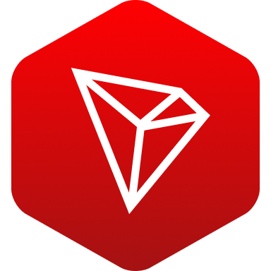

.png)
①
Freeze TRX (stake) for resources or voting power
You stake by freezing TRX. In return, you can gain resources (Energy / Bandwidth) and voting power (TP).

Tron Staking generally means staking (freezing) TRX to obtain Tron Power (TP), voting for Super Representatives (SRs), earning rewards, and optionally optimizing Energy/Bandwidth for lower execution costs. The result that matters is net outcome: rewards + resource benefits − lock/unfreeze constraints − operational risk.
You stake by freezing TRX. In return, you can gain resources (Energy / Bandwidth) and voting power (TP).
Voting allocates your influence and is typically how staking rewards are distributed. Choose SRs with transparent reward policies and a stable track record.
Rewards can vary by SR and can be paid on different schedules. Track expected rewards and verify receipts on-chain.
Unstaking typically requires an unfreeze period. Plan liquidity needs ahead of time and avoid staking 100% of your TRX balance.
Tron Staking is the process of staking (freezing) TRX to obtain voting power and/or network resources. In practice, most users stake TRX for one of two reasons: (1) earn rewards by voting SRs, or (2) reduce transaction costs by increasing Energy/Bandwidth.
Users who hold TRX and want either ongoing rewards or cheaper TRON transactions via resource optimization.
Staked TRX is not instantly liquid. There is an unfreeze/unstake process and timing considerations.
Staking TRX is not just “earn yield”. It’s also about reducing your real execution costs on TRON. Here’s the practical mapping:
| Goal | What staking gives you | Who it’s best for |
|---|---|---|
| Earn rewards | Tron Power (TP) to vote SRs that distribute rewards | Long-term TRX holders |
| Lower transaction costs | More Energy/Bandwidth so you spend less TRX per tx | Active users (dApps, swaps, approvals) |
| Operational stability | Stable resources reduce failed tx + “surprise” costs | Frequent on-chain operators |
Staking returns can differ depending on which SR(s) you vote for and how they distribute rewards. Model your yield like this:
TRON costs can be paid via resources. If you have enough Bandwidth and Energy, you can reduce or avoid spending TRX for many actions.
| Resource | Used for | Why it matters for staking |
|---|---|---|
| Bandwidth | Basic transactions (transfers, tx size) | Reduces everyday send/receive costs |
| Energy | Smart contract execution (DEX, DeFi, approvals) | Most “expensive” actions consume energy; staking can reduce TRX burn |
SR selection affects reward consistency and operational reliability. Use a simple checklist:
Unstaking TRX typically involves an unfreeze period before funds become liquid. The exact timing and steps depend on the interface and current network rules.
| Action | What happens | Common mistake |
|---|---|---|
| Unfreeze request | Begins unlock countdown; stake becomes time-locked | Expecting instant liquidity |
| Resources change | Energy/Bandwidth can decrease after unfreezing | Unfreezing right before heavy contract activity |
| Funds become available | After the period completes, TRX becomes spendable again | Not tracking timing and assuming funds are “missing” |
Use official sources for wallet interfaces, explorer verification, and staking concepts. Replace/extend this block based on your project requirements.
Tron Staking typically means freezing TRX to gain voting power (TP), voting for Super Representatives (SRs), earning rewards, and/or increasing Energy/Bandwidth to reduce transaction costs.
Use a trusted interface (TronLink or TronScan), choose how to allocate stake (Energy/Bandwidth), freeze a test amount, then vote SRs. Track rewards and verify state on TronScan.
In many cases, rewards are tied to SR voting and the SR’s reward policy. Make sure your votes are allocated and verify reward distribution over time.
Bandwidth helps with basic transactions, while Energy is consumed by smart contracts (dApps, swaps, approvals). If you use DeFi/dApps often, Energy is usually the more important resource.
Unstaking typically involves an unfreeze period before TRX becomes liquid again. Check your wallet interface for the current countdown and verify status on TronScan.
Operationally, the biggest risks are phishing and bad practices (using fake sites, staking via random deposits, staking all liquidity). Use official URLs, test small, keep a buffer, and verify on-chain.
Usually because you have less Energy/Bandwidth available (often after unfreezing) or you’re executing more contract-heavy actions. Increase resource stake and avoid repeated failed attempts.
For better security, many users keep a “vault” wallet for holding and a separate “interaction” wallet for dApps. This reduces the blast radius of phishing/approvals.
Open your address on TronScan and verify freeze/stake status, votes, and reward receipts. Explorers are the source of truth.